グレープフルーツの花が落ちました。
2024/05/15
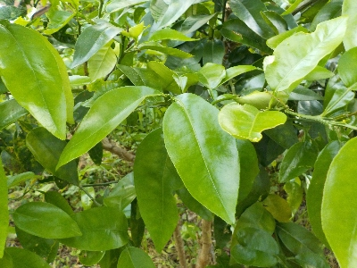
花が咲いて大喜びしていたんですが、消えてしまいました。
がっかりです。
また来年に期待するくらいしかないです。
2024/05/15

花が咲いて大喜びしていたんですが、消えてしまいました。
がっかりです。
また来年に期待するくらいしかないです。
2024/04/28
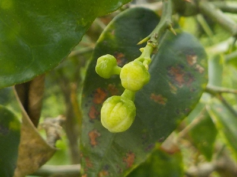
2012年に食べたグレープフルーツのタネを育てたものです。
2013年に一度開花しましたが、その後ずーっと開花していませんでした。
開花して実が育って欲しいですね。
2023/02/12
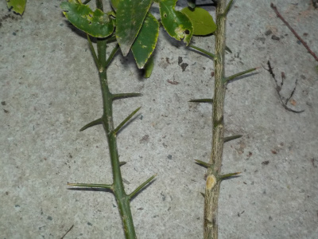
グレープフルーツの枝が混みあっていたので剪定しましたがが、トゲに当って痛かったです。
このトゲは危険です。
2021/04/24
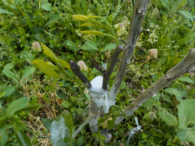
今年接ぎ木に失敗した下の場所で、再度接ぎ木に挑戦します。
もう気温が高いし、新芽も出ているので接ぎ木の時期じゃないかもしれませんが、やるだけやってみます。
2021/04/10
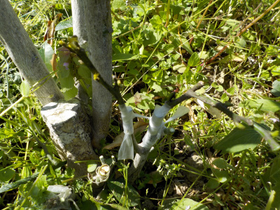
毎年失敗しているグレープフルーツの接ぎ木ですが、湿度キープのためのビニール袋が失敗の原因ではないかと思いました。
ビニール内が高温になってる気がします。
新しくビニール袋をかぶせないで接ぎ木してみました。
ちょっと枝か小さいのが不安ですが。今度こそ成功して欲しいです。
2021/03/1
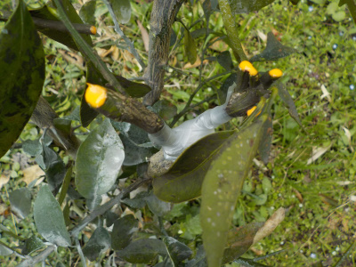
今年の寒波では雪の重みで、高い位置の幹が折れました。
グレープフルーツが大きく育つ環境ではなさそうなので、早く接ぎ木を成功させて寒耐性を持って欲しいんですが、なかなかうまくいかないです。
今回は温州ミカンを2本の幹に2本づつ接ぎ木しました。どうなるでしょうね。
2020/09/20
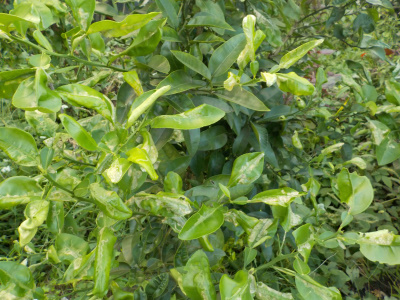
また失敗です。
何かが間違っているんだろうな
今年はラニーニャ現象で大寒波が来るかも？ってニュースがありました。
このグレープフルーツが以前の寒波で地上部が全部枯れてしまったので、また枯れないか心配です。
2020/05/02
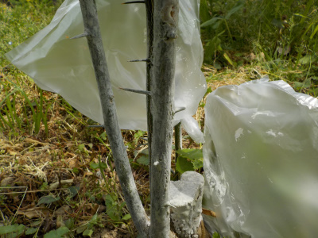
柑橘系は塗らなくてもいい気がしますが、ガットサイドSがまだ沢山あるので塗りました。
後ろのビニール袋は接ぎ木したところです。
2020/04/25
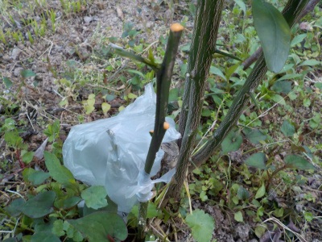
どうなるでしょうね。
いままでみかんの接ぎ木は全部失敗しています。
そろそろ成功して欲しいところです。
2020/04/05
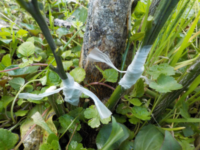
グレープフルーツにスイートスプリングを２本接ぎ木しました。
時間があったら更に追加して、確率を上げたいと思っています。
2019/09/23
枝が黒くなってしまいました。
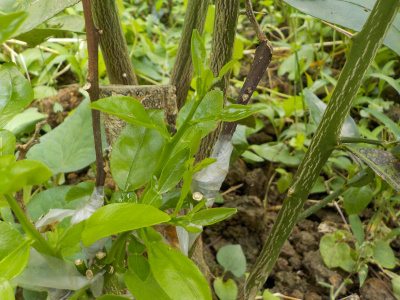
また今度挑戦します。
2019/08/31
グレープフルーツにミカンの接ぎ木をしたものです。
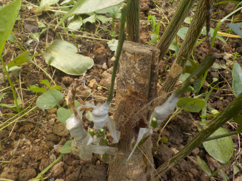
3本中2本は緑色です。
新芽はまだ出ていませんが、枯れていないのでこのまま育つかも。
今後が楽しみです。
これが失敗でも次にベストシーズンにやったら成功しそうな気がします。
2019/07/07
前回はうまく出来なくてイライラしながらの作業でしたが、今回は落ち着いてできました。
気温とか時間に余裕があるかで手先の器用さが違うんだなー。
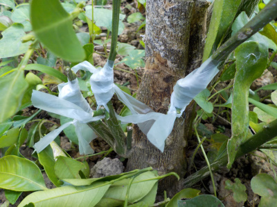
今回はとても上手に出来た。
でも終わってから接ぎ木方法を確認したら、木の切断面を合わせる向きが逆でした。
斜めにカットした部分を外側に向けるんですね。
今回のが枯れたら再挑戦しようと思います。
今回のが成功するといいんだけどな。
2019/05/12
接ぎ木は全滅です。
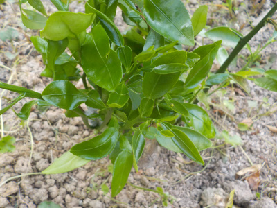
接ぎ木した下から新芽が沢山生えました。
新芽の下で切ったらもう一度接ぎ木が出来そうなので、梅雨になったら再挑戦しようと思います。
2019/03/24
株元から枝が沢山出てて邪魔だなー。
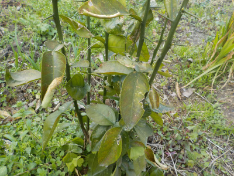
剪定して減らしてもいいけど、接ぎ木に丁度いいかもと思いやってみました。
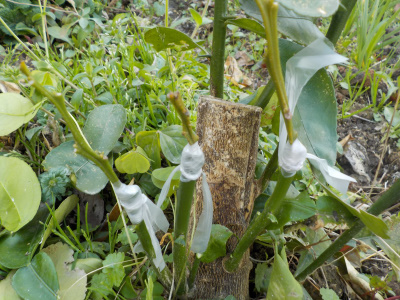
思ってたより難しかったです。
良い刃物を使わないと、スパッと斜めに切れないですね。
テープでぐるぐる縛るのも、ちゃんとはまったまま止まってるか不安になりました。
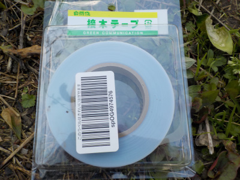
接ぎ木テープは大量に余っているので、今回駄目でもドンドン挑戦してみようと思います。
先ずは切れ味のいい刃物を買おうと思います。
2018/03/11
冬の寒さがこらえたらしく、葉っぱが茶色くなりました。
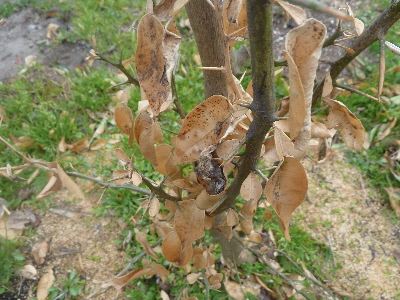
枯れ木状態です。
この木に限ったことではなく、他の柑橘系の木も葉を多く落としました。
みんな新芽が出で復活できるのだろうか。
2017/11/26
通り道附近に1本植えていたんですが、歩く特によくぶつかっていたせいか、あまり育ちませんでした。
今後もたぶん育たないと思うので抜いてしまいました。
残った1本は大きく育っています。来年は花が咲かないかな。
2016/07/24
むしゃむしゃ食べてるね。
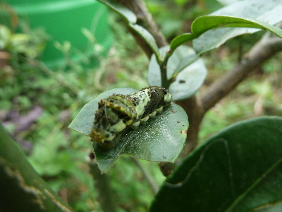
何蝶かな？
蛾かな？
2015/08/09
葉っぱが幼虫に食べられていました。
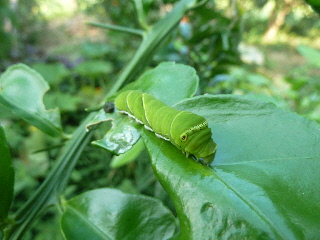
アゲハ蝶の幼虫です。
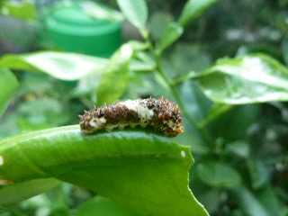
こっちもアゲハ蝶の幼虫です。
この茶色いのが大きくなると緑になるんですね。
さっきネットで調べて知りました。
葉っぱが沢山食べられてしまいました。
2014/09/27
なんだこれ。
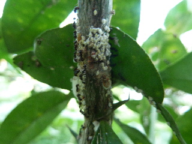
ちょっと気持ち悪い。
消毒したほうがいいのかな？でもこれから寒くなれば勝手にいなくなっちゃうのかな？
とりあえず何もしない。
2014/04/19
小さいプランターでは窮屈になったので、植木鉢に植え替えました。
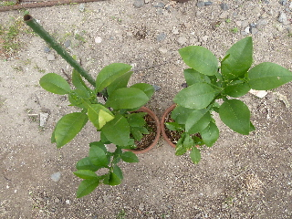
ちょっと鉢が小さい気がしますが、今までプランターに比べれば倍増です。
だからきっと大丈夫。
来年また植え替えが出来るくらい、大きく育って欲しいです。
2013/06/25
グレープフルーツの実が落ちました。
2013/06/15
グレープフルーツの実が出来ました。
2013/05/28
グレープフルーツの花が咲きました。
2013/05/18
グレープフルーツに花芽がついてる。
2013/05/03
グレープフルーツはまだ小さいです。
2013/01/20
寒いですがグレープフルーツは枯れていません。
2012/08/12
グレープフルーツを植え替えました。
2012/06/30
グレープフルーツがすくすく育っています。
2012/06/17
グレープフルーツの芽が出ました。
2012/06/04
ピンクグレープフルーツの中に、根が出た種がありました。
グレープフルーツの種を植えて育てています。